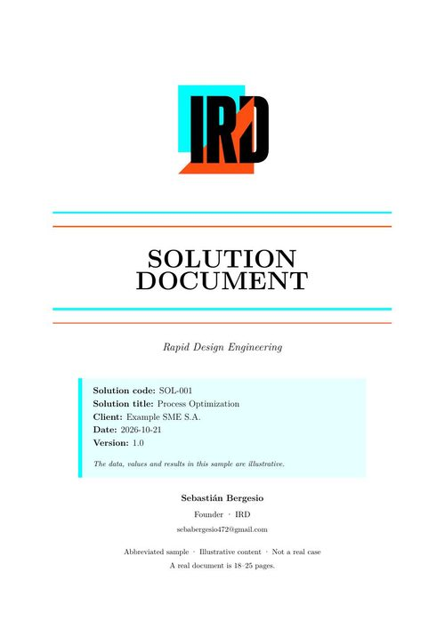
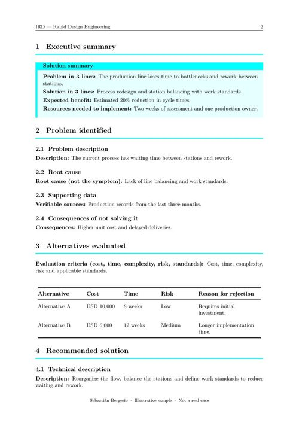
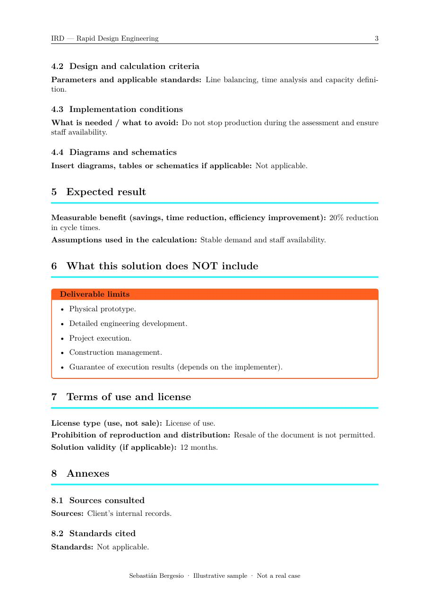

01 · Document
The problem, already organized
Data, alternatives, calculations and limits in one file. The professional does not start from a blank page.
What you get, what it looks like and what it costs. A technical deliverable for deciding, tendering or executing with less trial and error.
The structure does not change from one project to another. That makes the document quick to read, easy to compare and clear about its limits without hunting through fine print.
Problem, solution and expected benefit on one page. For the person who decides without reading the rest.
1 pageDescription, root cause, supporting data and the consequences of leaving it unresolved.
Data and evidenceAt least three paths compared by cost, time, risk and reason for rejection.
Comparison tableDesign criteria, calculations, implementation conditions and diagrams where they add value.
Supported recommendationMeasurable benefit, the assumptions behind the calculation and what remains to be verified.
Benefit and assumptionsThe limits of the deliverable, written before execution starts.
Explicit limitsLicense, validity and conditions for reproducing the document.
License of useSources, cited standards and a glossary for readers who are not specialists.
TraceabilityThe sample is abbreviated. A real document develops each section and usually runs 18–25 pages.
The sample has the same format, the same structure and the same level of detail as a real document. It is illustrative: it is not a client case and does not promise results.
5-page abbreviated sample · Illustrative content · Not a real case · A real document is 18–25 pages.

01 · Cover
02 · Summary and alternatives
03 · Solution and limitsThe document is designed so someone else can review it, sign it or execute it. It also tells you what is out of scope before you pay.
If the project needs detailed engineering, execution or a signature, the document serves as the basis for a licensed professional or a shop to develop it.
The document saves the professional from rebuilding the problem from scratch. Their job is to review, adjust and sign when regulations require it.
Data, alternatives, calculations and limits in one file. The professional does not start from a blank page.
A licensed engineer reviews the assumptions, corrects what is needed and decides whether the document is ready to sign.
The signature belongs to the licensed professional, not IRD. The document remains as technical and traceable support.
The timeline starts when I receive the data and the advance. Every stage has a concrete deliverable; there are no meetings without a purpose.
One hour to understand the problem and confirm whether it can be documented.
Scope, price, timeline and terms in writing. The 50% advance is paid.
I gather data, compare alternatives and deliver the draft for review.
Two revision rounds, a handover call and payment of the remaining 50%.
Timelines run from receipt of the data and the advance. Projects longer than 30 days can be split into three payments: 40% / 30% / 30%.
The full document is the core product. The consultation and diagnosis exist to reduce risk before investing. There is no fixed price without a scope.
| Product | Price | Timeline | Pages | For whom |
|---|---|---|---|---|
| Consultation | USD 80 | 1 h | — | Organize the problem and decide the next step. |
| Express diagnosis | USD 450–500 | 7–10 days | 8–12 | One problem, one recommendation and three alternatives. |
| Full document | USD 1,200–1,400 | 15–25 days | 18–25 | A defined problem that needs a documented solution. |
| Complex project | From USD 3,000 | 4–8 weeks | To be defined | Multiple lines, extended assessment or iteration. |
| Monthly support | USD 300/month | Monthly | — | Document review and consultations for a project in progress. |
Number of lines or equipment, quality of available data, depth of analysis and how many alternatives need to be evaluated.
The format: every document has the same 8 sections, two revision rounds and editable LaTeX source.
Prices in USD. In Argentina they are charged in pesos at the day's MEP rate + 5%. Quote valid for 7 days. Unpaid balances are adjusted by IPC. 50% in advance and 50% on delivery. For international clients, the payment method is coordinated when the project is confirmed.
I don't need you to have everything figured out. I need access to the real information and one person who can decide. If a critical data point is missing, we say so before quoting.
What is happening, since when, what has been measured and what records exist.
Drawings, technical sheets, standards, photos or remote visits, depending on the case.
Someone on your side to validate assumptions and make constraint decisions.
Time to understand the process and test the alternatives with your team.
If your question is not here, write to me. I reply within 24–48 business hours.
Yes. The document includes two revision rounds. Changes within the agreed scope are included; if the scope changes, it is quoted separately before the work is done.
The client receives a license to use the document for their project. Resale and publication without authorization are not permitted. IRD retains its methodology and templates.
You can share it with your team, your licensed professional, a bank, a municipality or a shop within the project. To publish, distribute or use it commercially outside that scope, you need written authorization.
If critical information is missing, I tell you before quoting. If additional assessment is needed, it is quoted as part of the project; I do not invent data to complete the document.
No. IRD delivers technical documentation for a licensed professional to review, adjust and sign when appropriate. The signature and professional responsibility are not part of the deliverable.
Tell me what problem you have, what data exists and when you need it. If the document is not the right path, I tell you.
I reply within 24–48 business hours · Quote valid for 7 days